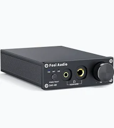

Rozwiązania zintegrowane i zewnętrzne USB
Zintegrowany układ Audio
Jest umieszczony bezpośrednio na płycie głównej komputera. Nie wymaga dodatkowego montażu ani osobnego podłączania. Wystarcza do codziennej komunikacji internetowej, oglądania filmów i słuchania muzyki.
Karta wewnętrzna
Jest osobnym podzespołem montowanym najczęściej w slocie PCI Express. Może oferować lepsze parametry dźwięku, dodatkowe złącza oraz bardziej zaawansowane możliwości przetwarzania sygnału.
Zewnętrzne DAC USB
Są to urządzenia podłączane do komputera przez USB. Mogą poprawić jakość dźwięku i ograniczyć wpływ zakłóceń elektrycznych pochodzących z wnętrza obudowy. Często posiadają również wzmacniacz słuchawkowy.

